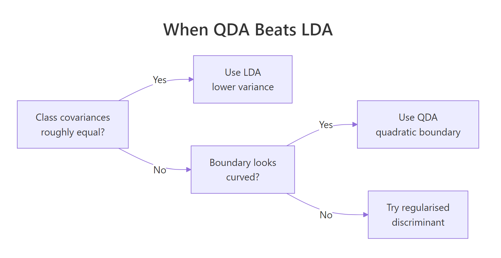
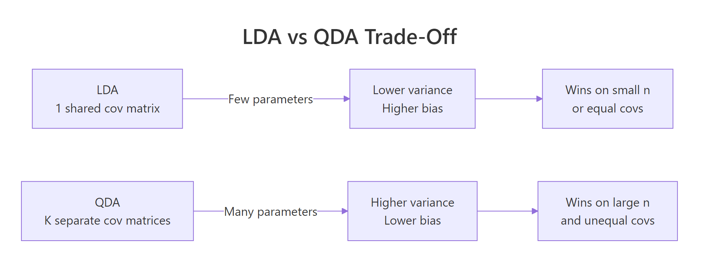

Quadratic Discriminant Analysis in R: When LDA Assumptions Break
Quadratic discriminant analysis (QDA) is the classifier you reach for when linear discriminant analysis (LDA) gets the boundary wrong because each class's spread is different. QDA fits a separate covariance matrix per class, so the decision boundary curves into ellipses, parabolas, or hyperbolas instead of a single straight line.
This guide shows how to spot the symptoms in your own data, fit qda() from MASS, and decide when QDA is worth its higher variance cost.
When does LDA actually fail in practice?
LDA assumes every class shares the same covariance matrix, the same shape, orientation, and spread. When that fails, LDA's straight-line boundary slices through one cluster while leaving the other half untouched. The fastest way to see the problem is to build a tiny dataset where one class is wide and another is narrow, then look at the per-class covariance matrices side by side.
The block below simulates two classes from multivariate normals with deliberately different covariance matrices, then prints those matrices so you can compare them.
Class B's variances are roughly four times those of class A, and the off-diagonal terms have opposite signs. LDA replaces both matrices with a single pooled estimate; that pooled matrix is wrong for both classes, so the boundary it produces will be a compromise that fits neither cluster well.
Try it: Generate a third "class C" of 200 points centred at (-1, 3) with a near-diagonal covariance (variance 0.5 along x1, variance 5 along x2, no correlation). Print its covariance matrix using cov().
Click to reveal solution
Explanation: diag(c(0.5, 5)) builds a diagonal matrix with no cross-correlation, and mvrnorm draws samples whose empirical covariance matches it (up to sampling noise).
What does QDA do differently?
LDA derives one linear discriminant by assuming a shared covariance $\Sigma$. QDA drops that constraint and estimates a separate $\Sigma_k$ for every class. The result is a quadratic discriminant function whose level sets curve.
The discriminant for class $k$ becomes:
$$\delta_k(x) = -\tfrac{1}{2} \log |\Sigma_k| - \tfrac{1}{2} (x - \mu_k)^\top \Sigma_k^{-1} (x - \mu_k) + \log \pi_k$$
Where:
- $\Sigma_k$ = the covariance matrix for class $k$
- $\mu_k$ = the mean vector for class $k$
- $\pi_k$ = the prior probability of class $k$
- $x$ = a new observation
The $(x - \mu_k)^\top \Sigma_k^{-1} (x - \mu_k)$ term is quadratic in $x$, and because $\Sigma_k^{-1}$ differs across classes, the boundary where $\delta_A(x) = \delta_B(x)$ is no longer linear. If you're not interested in the math, skip ahead. The practical code below is all you need.
Fitting QDA in R uses MASS::qda() with the same formula syntax as lda().
The printed object shows priors (here 50/50, since both classes have 200 points) and group means. Notice there are no "coefficients of linear discriminants", that slot exists only for LDA, because QDA's decision rule is not a linear projection.
To see the curved boundary, predict class on a fine grid and overlay the result on the data. The same grid is used to fit a baseline LDA so you can compare the two boundary shapes directly.
The grey dashed line is straight; the black solid line bends to follow the wider class-B cloud. Anywhere the lines disagree, LDA is forcing a linear compromise that QDA does not have to make.
Try it: Refit a QDA with only x1 as a predictor (class ~ x1) and print the model. What changes in the output and why?
Click to reveal solution
Explanation: With one predictor, Sigma_k collapses to a per-class variance and the quadratic boundary reduces to a pair of cut-points along the real line. The MASS print method hides the per-class scaling matrix, so the output looks shorter.
How do I check the equal-covariance assumption?
Box's M test compares per-class covariance matrices to the pooled estimate. The null hypothesis is "all class covariance matrices are equal." A small p-value rejects that null and warns you off LDA.
The test statistic is:
$$M = (n - K) \log |S_{\text{pool}}| - \sum_{k=1}^{K} (n_k - 1) \log |S_k|$$
with a small-sample correction that follows a $\chi^2$ distribution with $\frac{p(p+1)(K-1)}{2}$ degrees of freedom.
Rather than pull in a diagnostic package, the function below codes Box's M from scratch using only base R. It returns the test statistic, degrees of freedom, and p-value.
A p-value of 4.8e-46 says "extremely strong evidence of unequal covariances." That confirms what we already saw visually and numerically, and it is exactly the situation QDA was designed for.
A second sanity check is the ratio of covariance-matrix determinants. The determinant summarises the overall "volume" of a covariance ellipsoid; a max-to-min ratio above ten suggests LDA is on shaky ground.
A ratio of about 19 is well past the rule-of-thumb threshold of 10, reinforcing the Box's M verdict.
Try it: Run box_m() on the four numeric columns of iris, grouping by Species. Read the p-value and decide whether iris violates the equal-covariance assumption.
Click to reveal solution
Explanation: The famous iris dataset, often used as an LDA classroom example, actually fails Box's M strongly. Setosa is much tighter than virginica, so QDA is a fair candidate here too.
How do LDA and QDA compare on a real dataset?
The fairest comparison is misclassification on held-out data. The block below runs a 70/30 split on iris, fits both models on the training rows, and tabulates accuracy on the test rows.
LDA and QDA tie at about 98% on this split: both put one versicolor flower into the virginica bucket. Iris's covariances differ enough to fail Box's M, but the class means are so well separated that either boundary handles the easy points.
For a less seed-dependent verdict, both lda() and qda() accept CV = TRUE, which returns leave-one-out cross-validated predictions in a single call.
The LOOCV view is nearly identical, and the small dip for QDA is exactly the variance penalty you would expect from estimating three separate 4×4 covariance matrices on 105 training rows.
predict.qda() returns class labels and posterior probabilities, just like predict.lda(). What is missing is linear.discriminants, the lower-dimensional projection LDA gives you for plotting. QDA has no such projection because its decision boundary is not a linear subspace.Try it: Repeat the LOOCV comparison using only the sepal columns (Species ~ Sepal.Length + Sepal.Width). Which model wins, and is the gap larger or smaller than the full-feature run?
Click to reveal solution
Explanation: With only sepal features, classes overlap and the boundary really matters. QDA's curved boundary picks up a couple of extra correct predictions, which is when its extra parameters start paying for themselves.
When should I prefer LDA over QDA?
QDA is more flexible, but flexibility costs parameters. With $K$ classes and $p$ predictors, LDA estimates $\frac{p(p+1)}{2}$ unique covariance entries. QDA estimates $K \cdot \frac{p(p+1)}{2}$. With ten predictors and four classes, that is 220 covariance numbers for QDA versus 55 for LDA. A small training set cannot pin all of those down accurately, so QDA's variance balloons.
A useful rule of thumb: prefer LDA when any class has fewer than $\approx 10p$ training rows, prefer QDA when covariances clearly differ and every class has many more rows than that, and consider regularised discriminant analysis (RDA) in between.

Figure 1: Decision flow for picking between LDA, QDA, and a regularised middle ground.
The simulation below makes the trade-off concrete. It draws a small training set from the same unequal-covariance setup as before, then sweeps the per-class sample size from 20 to 200 and tracks test accuracy for both classifiers.
At 20 rows per class, QDA actually loses to LDA because its per-class covariance estimates are noisy. By 200 rows per class, QDA pulls ahead by about four accuracy points. That gap is the unequal-covariance signal becoming detectable, and it is exactly why "QDA always beats LDA on curved data" is wrong: small samples kill QDA before the signal arrives.
klaR::rda() shrinks per-class covariances toward the pooled one with a tuning parameter, giving you the QDA flexibility you can afford and no more. RDA is not yet shipped with WebR-compatible builds, so plan to run it locally in RStudio.Try it: Run the iris LOOCV comparison again after subsetting iris_train to a random 15 rows. Record which model wins now and explain the result.
Click to reveal solution
Explanation: With five rows per species, QDA tries to estimate three 4×4 covariance matrices from almost nothing. The estimates are unstable, so LOOCV punishes it. LDA's pooled covariance has 15 rows behind it and degrades much more gracefully.
Practice Exercises
Exercise 1: LDA vs QDA on the quine dataset
The MASS quine dataset records absences from school. Predict Sex (M or F) from Days (number absent) and Age (factor) using both LDA and QDA via leave-one-out cross-validation. Report which model has lower error and explain the result by inspecting per-class variances of Days.
Click to reveal solution
Explanation: Variance of Days differs by ~1.7x between sexes, so QDA edges out LDA by about one percentage point. The absolute accuracy is poor because sex is barely predictable from these features at all.
Exercise 2: A repeated-split comparator
Write compare_lda_qda(formula, data, n_splits = 50, train_frac = 0.7) that performs n_splits random train/test splits and returns the mean test accuracy for each model. Apply it to Species ~ . on iris. The function must print a named numeric vector with lda and qda entries.
Click to reveal solution
Explanation: replicate() repeats the splitting and scoring; rowMeans() aggregates. On iris the means are essentially equal because the species are so well separated that the boundary shape barely matters.
Complete Example
This end-to-end example walks the full diagnose-fit-decide loop on a 3-class simulated problem where one class has a clearly different covariance.
Box's M rejects equal covariances (p ≈ 1e-37). LOOCV gives QDA a six-point edge over LDA, which agrees with the Box's M verdict and the visibly different shape of group 3. The plot shows that the boundary around group 3 bends to follow its elongated shape rather than carving a straight line through it. Recommended model: QDA.
Summary
| Question | Answer |
|---|---|
| LDA assumes... | One shared covariance matrix across all classes. |
| QDA assumes... | A separate covariance matrix per class. |
| When does QDA win? | Class covariances clearly differ AND each class has many rows. |
| When does LDA win? | Small samples or roughly equal covariances. |
| Tools in R | MASS::lda, MASS::qda, predict(), qda(..., CV = TRUE) |
| Diagnostics | Box's M test + determinant ratio of per-class covariance matrices. |
| Middle ground | Regularised discriminant analysis (klaR::rda). |

Figure 2: The bias-variance trade-off behind the LDA-vs-QDA choice.
References
- James, G., Witten, D., Hastie, T., Tibshirani, R. An Introduction to Statistical Learning with Applications in R, 2nd ed., Section 4.4 (Discriminant Analysis). Link
- Hastie, T., Tibshirani, R., Friedman, J. The Elements of Statistical Learning, 2nd ed., Chapter 4.3. Link
- Venables, W.N., Ripley, B.D. Modern Applied Statistics with S, 4th ed., Springer (2002), Chapter 12.
- R-core.
MASS::qdareference manual. Link - Friedman, J.H. Regularized Discriminant Analysis. JASA 84:165-175 (1989).
- Box, G.E.P. A General Distribution Theory for a Class of Likelihood Criteria. Biometrika 36:317-346 (1949). Link
- UC Business Analytics R Programming Guide. Discriminant Analysis. Link
Continue Learning
- Linear Discriminant Analysis in R: the parent post that QDA generalises.
- Logistic Regression in R: a discriminative alternative when class-conditional Gaussians are a stretch.
- Multivariate Statistics in R: foundational distance and Mahalanobis ideas underpinning discriminant analysis.